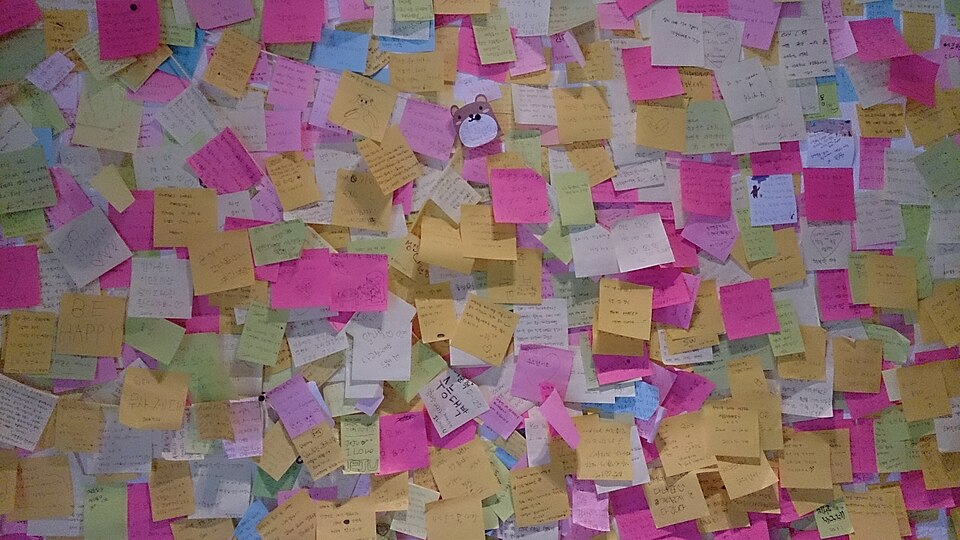
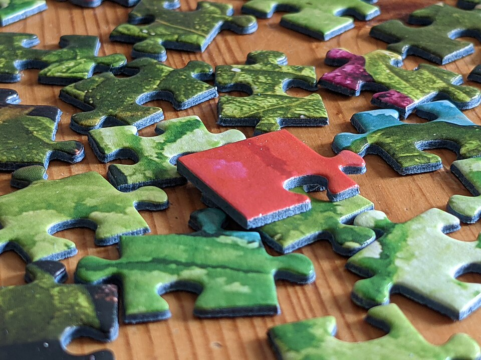

yoshitaka2
yoshitaka2
Good morning!
Nur das Schöne wird die Welt retten!
Fjodor Dostojewski
Nicht verzagen, Doc Alvers fragen!
Informatik — Grundkurs 11
Aus Material wird ein Bericht
Auswerten statt nacherzählen, gliedern, gemeinsam schreiben, zitieren
Nicht verzagen, Doc Alvers fragen!
Kapitel 01
Material auswerten
Zuordnen, vergleichen, folgern

Nicht verzagen, Doc Alvers fragen!
Wo wir stehen
Letzte Woche: Recherche — Teilfragen, Rechercheprotokoll, gemeinsame Quellenliste
Jetzt liegt Material auf dem Tisch — aber noch keine Antwort
Heute beginnt die Erarbeitung: selbstständig im Team, nach eurem Projektplan
Leitfrage der Stunde: Wie wird aus gesammeltem Material eine nachvollziehbare Antwort?
Nicht verzagen, Doc Alvers fragen!
Der Fahrplan des Projekts
| Ustd. | Phase | Ergebnis der Phase |
|---|---|---|
| 1–2 | Themenwahl und Planung | Leitfrage, Projektskizze, Meilensteine |
| 3–4 | Recherche | geordnetes, belegtes Material |
| 5–6 | Erarbeitung I | Gliederung und Rohfassung |
| 7–8 | Erarbeitung II | geprüfte Endfassung |
| 9–10 | Präsentation ausarbeiten | Foliensatz und Generalprobe |
| 11–12 | Präsentationen I | erste Vorträge, Portfolio-Abgabe |
| 13–14 | Präsentationen II und Auswertung | Bewertung und Reflexion |
Grün: geschafft — Orange: heute
Nicht verzagen, Doc Alvers fragen!
Jede Stunde beginnt mit dem Stand-up
Kurz, im Stehen, wenige Minuten — jede Person beantwortet drei Fragen:
Was habe ich seit dem letzten Mal geschafft?
Was hindert mich gerade?
Was mache ich als Nächstes?
Probleme werden nur benannt — gelöst wird danach, mit den Betroffenen
Nicht verzagen, Doc Alvers fragen!
Erster Schritt: zuordnen
Erster Schritt beim Auswerten: die Fundstellen den Teilfragen zuordnen
Die Zuordnung zeigt sofort, wo noch etwas fehlt
Sie macht die Gliederung fast von selbst
Zusammenfassen kommt erst danach
Nicht verzagen, Doc Alvers fragen!
Beschreiben oder auswerten?
Beschreiben
gibt wieder, was in den Quellen steht
ergibt eine Materialsammlung
fühlt sich nach Arbeit an
Auswerten
ordnet ein und zieht Schlüsse
vergleichen, gewichten, folgern
genau darin liegt eure eigene Leistung
Nicht verzagen, Doc Alvers fragen!
Wenn Ergebnisse nicht passen
Quellen widersprechen sich? Den Widerspruch benennen und mögliche Gründe erörtern
Oft messen die Quellen Verschiedenes — das offenzulegen ist saubere Arbeit
Ergebnis gegen die Erwartung? Berichten und die Erwartung als widerlegt kennzeichnen
These nachträglich anpassen oder suchen, bis es passt: beides ist Täuschung
Ergebnis und Bewertung trennen: Was wurde gemessen, was ist eure Einschätzung?
Nicht verzagen, Doc Alvers fragen!
Kapitel 02
Der Bericht bekommt Gestalt
Gliederung, Einleitung, Schluss
Nicht verzagen, Doc Alvers fragen!
Aufbau eines Projektberichts
| Teil | was hineingehört |
|---|---|
| Zusammenfassung | Frage, Vorgehen und Ergebnis in wenigen Sätzen — entsteht ganz am Schluss |
| Einleitung | Leitfrage, Bedeutung des Themas, Vorgehen in Kürze — noch keine Ergebnisse |
| Hauptteil | ein Abschnitt je Teilfrage, geordnet nach dem Gedankengang |
| Schluss | Antwort auf die Leitfrage, Grenzen der Arbeit, offene Fragen |
| Quellen und Anhang | Quellenverzeichnis; Material zum Nachprüfen in den Anhang |
Die Gliederung folgt den Teilfragen, nicht der Reihenfolge des Findens
Viele lesen nur die Zusammenfassung — deshalb muss das Ergebnis darin stehen
Nicht verzagen, Doc Alvers fragen!
Der häufigste Fehler
Das Material wird nacherzählt, aber die Leitfrage nie beantwortet
Nacherzählen fühlt sich nach Arbeit an, ist aber keine Auswertung
Gegenmittel: nach jedem Abschnitt zurück auf die Leitfrage schauen
Qualität heißt: Die Antwort folgt nachvollziehbar aus dem gezeigten Material
Länge, Zahl der Quellen, Gestaltung: Mittel, kein Ziel
Nicht verzagen, Doc Alvers fragen!
Zahlen, Abbildungen, Satz
| Element | so ist es richtig |
|---|---|
| Zahl | Einheit, Bezugsgröße und Quelle immer mitnennen |
| kleine Stichprobe | absolute Zahlen statt Prozent, keine falschen Nachkommastellen |
| Abbildung | Unterschrift mit Nummer, Beschreibung und Quelle |
| Blocksatz | nur mit Silbentrennung — sonst große Lücken; lieber linksbündig |
30 Prozent ohne Grundgesamtheit sagen nichts
Die Nummer der Abbildung erlaubt den Verweis im Text
Nicht verzagen, Doc Alvers fragen!
Kapitel 03
Im Team schreiben
Eine Fassung, klare Zuständigkeit, sauber zitieren

Nicht verzagen, Doc Alvers fragen!
Gemeinsam schreiben
So nicht
jede Person schreibt ihr Kapitel und fügt es am Ende ein
eine Person schreibt alles
alle schreiben gleichzeitig überall
Ergebnis: liest sich wie vier Berichte
So schon
eine gemeinsame Fassung, klare Zuständigkeit je Abschnitt
eine Endredaktion: Eine Person vereinheitlicht Sprache, Begriffe und Zitierweise
verantwortlich bleibt die ganze Gruppe
Nicht verzagen, Doc Alvers fragen!
Digitale Kooperationswerkzeuge
Eine gemeinsame Fassung im Projektordner oder in der Cloud — keine Kopien per Mail
Kommentare an der Textstelle statt in einem getrennten Chat
Die Versionsgeschichte zeigt, wer was wann geändert hat
Aufgaben und Termine sichtbar führen — wie im Projektplan
Sichern: eine zweite Kopie an einem anderen Ort
Nicht verzagen, Doc Alvers fragen!
Sinngemäß zitieren
Sinngemäß zitieren: in eigenen Worten formulieren und die Quelle mit Verweis angeben
Auch sinngemäße Übernahmen sind belegpflichtig
Einen Satz umstellen macht aus fremden Gedanken keine eigenen
Nur im Quellenverzeichnis nennen reicht nicht — der Verweis gehört an die Stelle
Nicht verzagen, Doc Alvers fragen!
Zwischenstand und Zeitplan
Zwischenstand für die Beratung: die Gliederung mit dem Stand je Abschnitt
Keine komplette Rohfassung — sie zu lesen kostet Zeit ohne Nutzen
Den Plan ehrlich abgleichen: Bei Verzug den Umfang anpassen
Endtermin verschieben oder nachts arbeiten ist keine Lösung
Nach dieser Woche beginnen die Osterferien — vorher sichern, was steht
Nicht verzagen, Doc Alvers fragen!
Auswerten heißt: Fundstellen den Teilfragen zuordnen, vergleichen und Schlüsse ziehen — der Bericht folgt der Leitfrage, und am Ende steht ausdrücklich die Antwort.
Merksatz
Nicht verzagen, Doc Alvers fragen!
Fun Facts
Die ersten Puzzles waren Landkarten: In den 1760er-Jahren klebte der Londoner John Spilsbury Karten auf Holz und zersägte sie
Korrekturflüssigkeit erfand eine Sekretärin: Bette Nesmith Graham — die Mutter des Monkees-Musikers Michael Nesmith
In der Wikipedia schreiben Tausende an denselben Artikeln — die Versionsgeschichte hält jede einzelne Änderung fest
Der Stand-up heißt so, weil er im Stehen stattfindet — wer steht, fasst sich kürzer
Nicht verzagen, Doc Alvers fragen!
Checkliste Erarbeitung I
Die Fundstellen sind den Teilfragen zugeordnet
Die Gliederung steht und folgt der Leitfrage
Jeder Abschnitt hat eine zuständige Person
Alle schreiben in einer gemeinsamen Fassung
Vor den Ferien: Stand gesichert und im Portfolio festgehalten
Nicht verzagen, Doc Alvers fragen!
Eure Aufgabe
Stand-up zu Beginn: geschafft, Hindernisse, nächste Schritte
Material auswerten: Fundstellen den Teilfragen zuordnen, Gliederung festlegen
Selbstständig im Team schreiben — eine Fassung, eine Zuständigkeit je Abschnitt
Zwischenstandsbericht an mich: Gliederung mit dem Stand je Abschnitt
Zum Schluss: Aufgaben (20) auf der Planseite — Lösung pro Aufgabe zum Aufklappen
Nicht verzagen, Doc Alvers fragen!